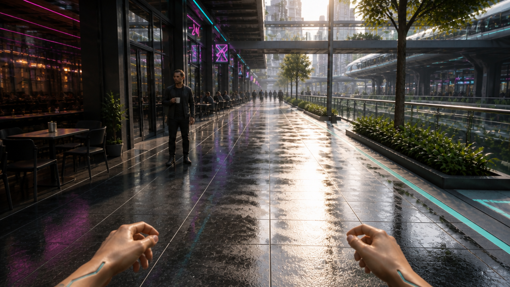

Coffee starting frame — patron farther ahead
Same cyberpunk cafe arcade

Same patron is now a smaller full-body figure farther ahead on the left instead of occupying the immediate foreground. Open paving separates Riley from the patron; nearby pedestrians have been cleared from the immediate route. Cafe on left, elevated transit on right, reflective pavement and cyan/magenta lighting maintain the established city. Riley remains first person with lowered natural-sized skin/chrome hands; the hero mug is upright before the drop.
What still needs testing
- The mug remains near the patron's chest and on the cafe side of his body, rather than low on the lane-facing side; this is still an important reach/trajectory constraint for motion.
- A second background cup is visible on the far-left cafe table. The hero mug must remain distinct in animation.
- Exact five-metre distance and 60–80cm later passing separation are prompting targets, not measured geometry.
- No still can verify a downward fall, timely side glance or circular camera move. Those remain motion tests; this image is not selected automatically.
- Some architecture and small face details changed during the edit.